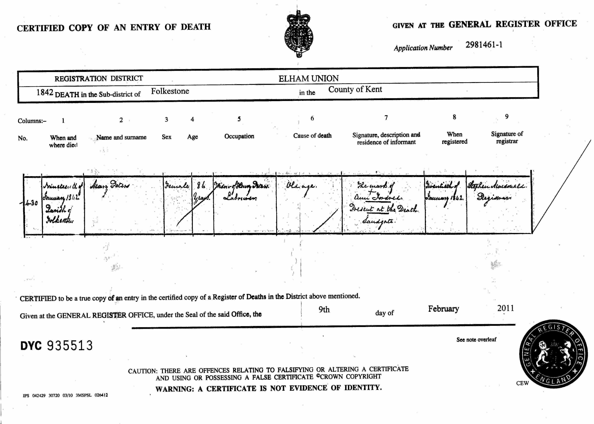
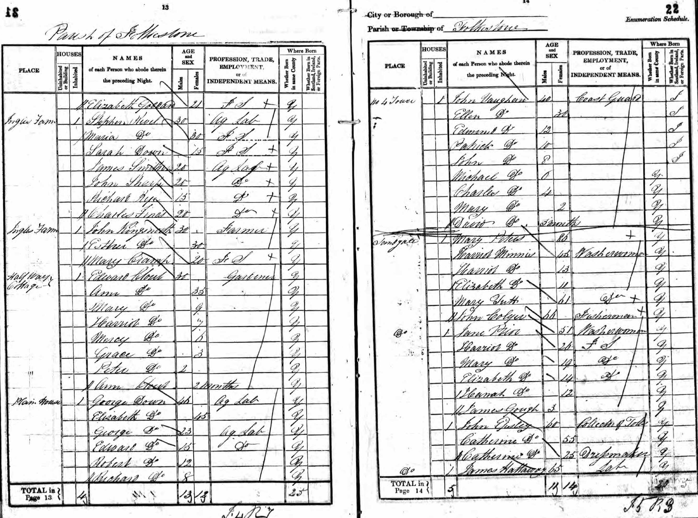
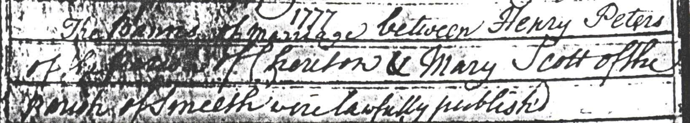

Mary Peters (née Scott) c1755 - 1842
[ Home ] | [ Calendar ] | [ Surnames Index ] | [ Family History ]Mary Scott, the 4 times great-grandmother of <a href="I1.html">Nigel Horne</a>, was born in Smeeth, Kent, England <i>c.</i> 1755<span class="citation">1</span> and married Henry Peters (with whom she had 9 children: <a href="I393.html">Mary</a>, <a href="I246.html">Sarah</a>, <a href="I386.html">Henry</a>, <a href="I385.html">Elizabeth</a>, <a href="I387.html">Charles</a>, <a href="I392.html">Jane</a>, <a href="I384.html">William</a>, <a href="I391.html">Benedicta</a> and <a href="I390.html">Harriet</a>) at St Mary the Virgin Church in Smeeth on Dec 6, 1777<span class="citation">3</span>. In 1841, she lived in Sandgate, Kent, England<span class="citation">1</span> which is where she died on Jan 19, 1842<span class="citation">2</span> (old Age). She was buried at St Martins, Cheriton, Kent on Jan 30, 1842.
Children
- Mary was born in 1780
- Sarah was born c. 1781
- Henry was born in Apr 1781
- Elizabeth was born in Feb 1786
- Charles was born on Apr 13, 1788
- Jane was born in 1790
- William was born in 1792
- Benedicta was born in 1795
- Harriet was born in 1797
Citations
- 1841 England Census Online publication - Provo, UT, USA: The Generations Network, Inc., 2006.Original data - Census Returns of England and Wales, 1841. Kew, Surrey, England: The National Archives of the UK (TNA): Public Record Office (PRO), 1841. Data imaged from the National
- England & Wales, FreeBMD Death Index: 1837-1915 Online publication - Provo, UT, USA: The Generations Network, Inc., 2006.Original data - General Register Office. England and Wales Civil Registration Indexes. London, England: General Register Office. © Crown copyright. Published by permission of the Cont
- England Marriages 1538-1973 - Findmypast
Media
Mary Scott - death certificate

1841 UK Census

Henry Peters - Mary Scott - Marriage Banns (Smeeth)

1841 England, Wales & Scotland Census Transcription - GBC-1841-0014078783
England & Wales deaths 1837-2007 Transcription - BMD-D-1842-1-AZ-000616-130
England Marriages 1538-1973 - R_847912303/2
Family Tree

Generated by Ged2Site. Last updated on Jul 20, 2025